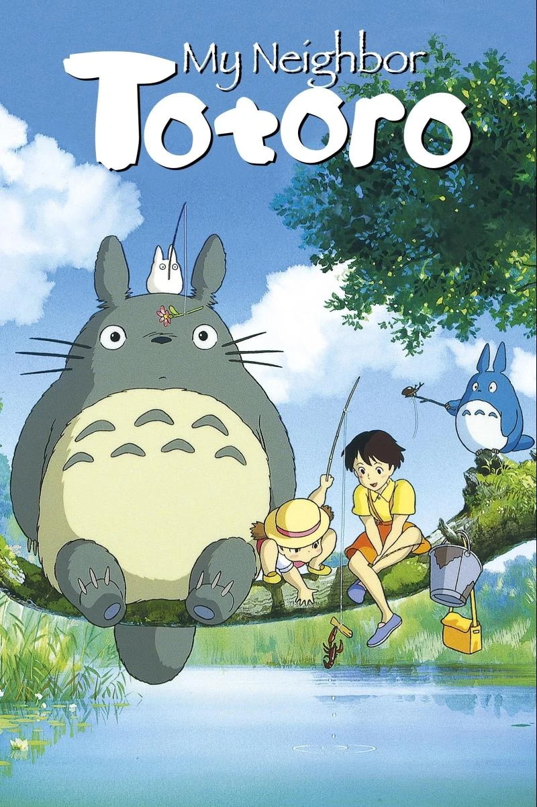

Studio Ghibli, Inc. is a Japanese animation studio based in Koganei, Tokyo. It has a strong presence in the animation industry and has expanded its portfolio to include various media formats, such as short subjects, television commercials, and two television films. Their work has been well-received by audiences and has even been recognized with awards. Itsn mascot and most recognizable symbol is a character named Totoro, a giant spirit inspired by raccoon dogs (tanuki) and cats from the 1988 anime film My Neighbor Totoro. The studio was founded on June 15, 1985, by the directors Hayao Miyazaki and Isao Takahata and producer Toshio Suzuki.
Howl's Moving Castle

Sophie is a woman who works at her late father's hat shop. her uneventful life changes when she meets and befriends a wizard named Howl, who lives in a magical flying castle. However, the evil Witch of Waste takes issue with their budding relationship and casts a spell on young Sophie, which ages her prematurely. Now Howl must use his magical talents to battle the hag and return Sophie to her former youth and beauty. more...
Spirited Away

10-year-old Chihiro and her parents stumble Upon what seems to be an abandoned amusement park. After her mother and father are turned into giant pigs, Chihiro meets the mysterious Haku, who explains that the park is a resort for supernatural beings who need a break from their time spent in the earthly realm, and that she must work there to free herself and her parents. more...
My Neighbor Totoro
This animated tale follows Satsuke and her younger sister, Mei, as they settle into an old country house with their father and wait for their mother to recover from an illness in an area hospital. As the sisters explore their new home, they encounter and befriend playful spirits in their house and the nearby forest, most notably the massive cuddly creature known as Totoro. more...
Ponyo

During a forbidden excursion to see the surface world, a goldfish princess encounters a human boy named Sosuke, who gives her the name Ponyo. Ponyo longs to become human, and as her friendship with Sosuke grows, she becomes more humanlike. Ponyo's father brings her back to their ocean kingdom, but Ponyo's wish to live on the surface is so strong, that she breaks free, and in the process, spills a collection of magical elixirs that endanger Sosuke's village. more...